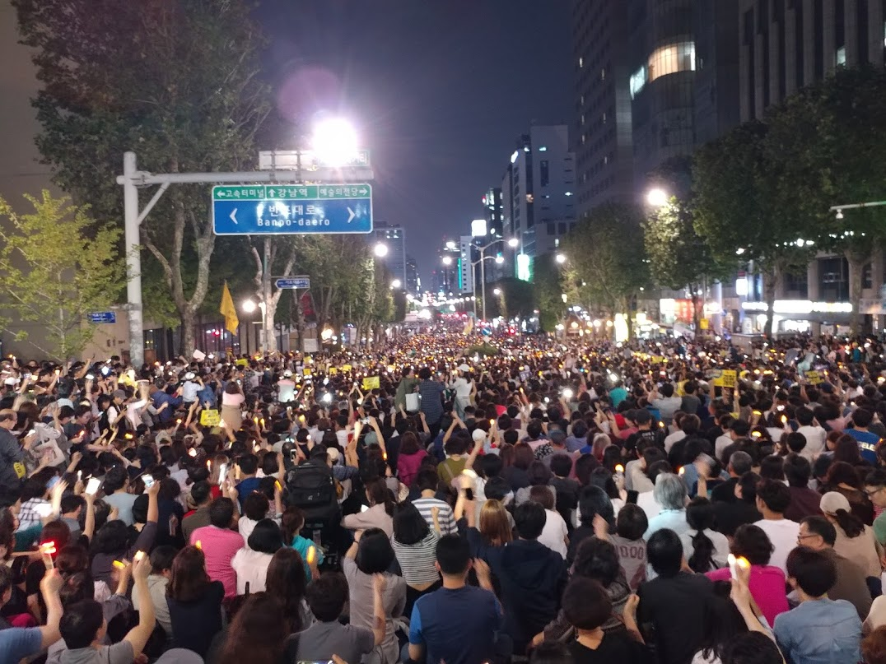
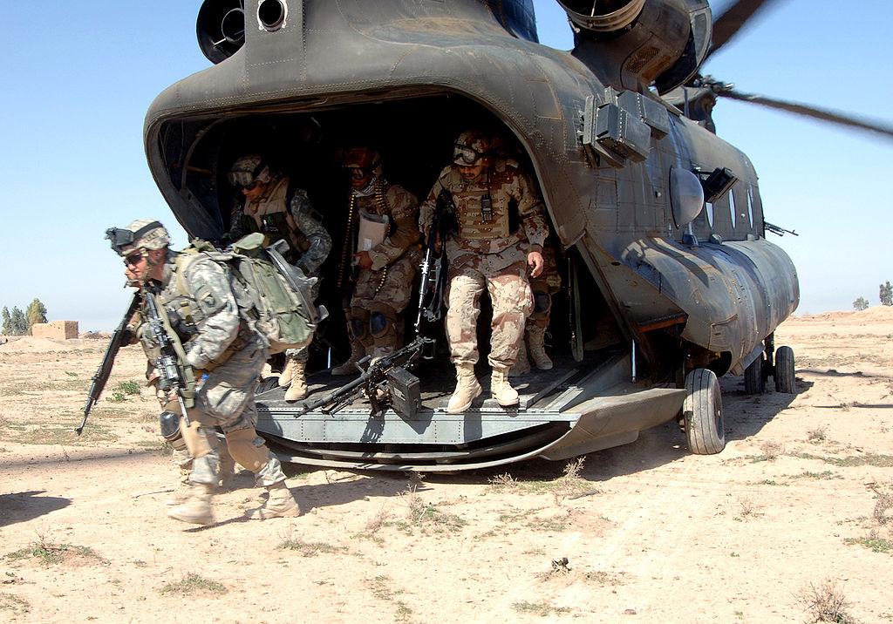
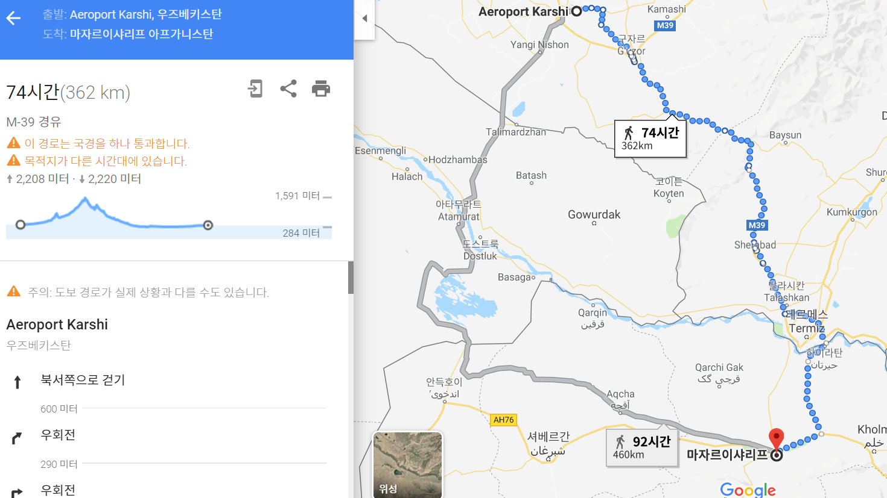
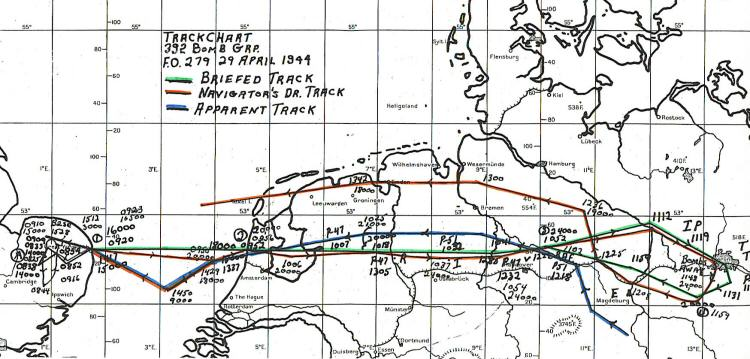
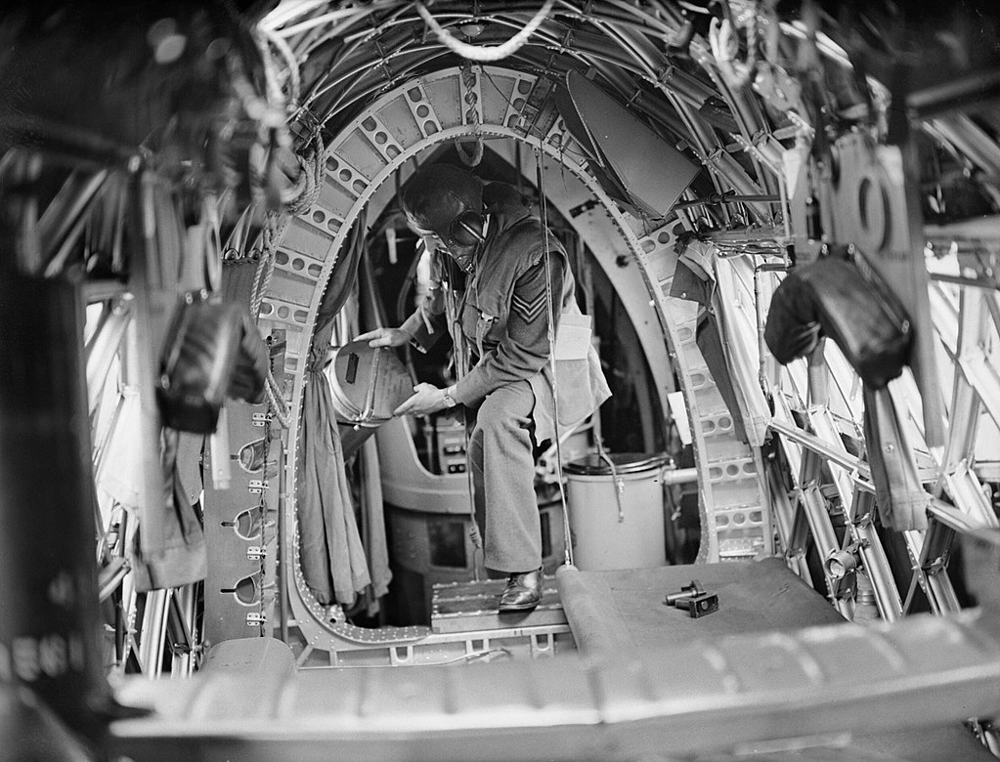
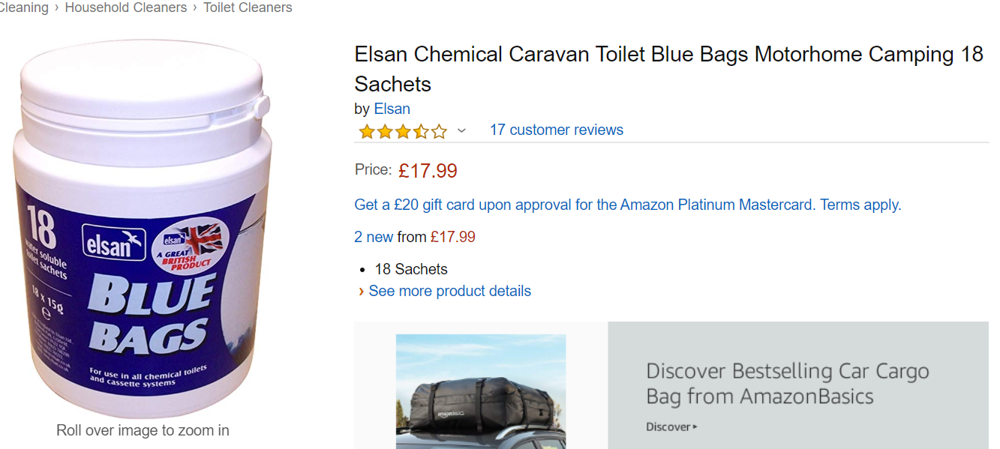

데모와 폭격기 - 화장실은 어디에 ?
게시: 2019-10-03T06:30:35+09:00
지난 서초동 집회에서 인상적이었던 것이 여러가지 있었습니다. 1) 참가자들의 연령대가 정말 다양했습니다. 애들부터 청년 장년 노년 아줌마 아재 등등 2) 예상보다 모인 인원이 너무 많다보니 서초동 한복판인데도 LTE 통신이 안 되더군요. 그러고 보면 2016년 503 탄핵 시위 때는 알게 모르게 통신사들이 임시 추가 중계기를 설치하는 등 애를 많이 썼던 모양이에요. 3) 손에 검찰개혁 플래카드를 든 수많은 인파 속 중간에 조그만 섬 같은 백여 명 정도의 우익 단체 시위대도 있었습니다. 그분들이 설치한 작은 무대 위에서 젊은 우익 여성 한분이 무대에서 깡총깡총 뛰면서 대형 스피커로 "문재인 탄핵, 조국 구속"을 외치는 것을 보았습니다. 그런데도 시위대가 그 여성에게 돌이나 동전 물병 그런 거 던지지 않있고 그저 그 여자 선창에 맞춰 "(문재인) 최고, (조국) 수호"를 외치며 웃었습니다. 저는 이 장면이 정말 인상 깊었고, 우리나라 시민들의 성숙도에 감명을 받았습니다. 4) 서초동의 으리으리한 사랑의 교회는 볼 때마다 인상적이었는데, 그날 보니 통유리로 된 건물 1~2개 층에는 불이 환하게 밝혀져 있었습니다. 그렇게 많은 사람이 모이는 일이 매일 있는 일은 아니니 꽤 장관이었을텐데도, 거기서 밖을 내다보는 사람이 하나도 없더군요. 잠깐 2명이 밖을 내다보는 것이 전부였습니다. 5) 전에 차를 몰고 지나가다 경찰의 이동식 화장실 트럭을 본 일이 있었습니다. 저건 시위 때 동원되는 경찰들을 위한 이동식 화장실인 모양이라고 생각했는데, 이번에 지나가면서 보니까 경찰이 시위 참가자들을 위해 그 이동식 화장실 트럭을 제공하고 있었습니다. 제가 본 모습은 여성들이 거기에 줄을 길게 늘어서 있더군요. 남자 줄도 있었는지는 모르겠습니다. 제가 못 봤을 수도 있지요. 나중에 이야기를 읽어보니 당일날 사랑의 교회는 1층 화장실을 시위 참가자들에게 오픈하지 않았다고 하더군요. 반면에 검찰청 옆 SK주유소는 시위 참가자들에게 화장실을 오픈했을 뿐만 아니라 그 앞에 휴지까지 쌓아놓았다고 해서 칭송이 자자했습니다.

(알고보니 제가 죽치고 앉아있던 곳은 메인이 아니더라는...!)
인간은 결코 고결하고 우아한 동물이 아닙니다. 물과 식량은 고사하고 불과 몇 시간만이라도 화장실이 없으면 인간=짐승이라는 것을 모두가 새삼 깨닫게 됩니다. 여러분은 하루에 (작은 거) 화장실을 몇 번 가십니까 ? 일반적으로는 하루에 6~7회, 그러니까 하루 6시간 잔다고 생각하면 대략 3시간마다 1번씩이 정상이지만 사람에 따라서는 4~10회도 특별히 이상할 것은 없다고 합니다. 저는 회사 사무실에 있을 때는 커피와 홍차를 자주 마시는 편인데, 굳이 커피나 홍차처럼 이뇨작용이 있다고 알려진 음료 외에 맹물이라도 마시면 마시는 만큼 화장실에 더 자주 가게 됩니다. 제목은 기억이 안나지만 전에 탐 클랜시(Tom Clancy)의 테크노 스릴러 소설을 읽다가 흥미롭게 생각했던 부분이 있었습니다. 반군 손에 넘어간 핵미사일 기지를 습격하러 가는 헬리콥터에 특수부대 요원 클라크와 차베스가 올라타기 전에 (이 둘은 장인과 사위 관계입니다) 함께 화장실에 가서 소변을 보는 장면이었습니다. 그러면서 '긴 비행을 하는 공수부대원들에게는 탑승 전 필수적인 코스'라는 설명이 나오더군요. 그런 묘사를 읽고 나니, 우리나라에서는 '12 솔져스'라는 이름으로 개봉되었던 햄식이 주연의 영화 '12 Strong'에서 처음 아프간에 헬리콥터로 침투하는 장면도 예사롭게 보이지 않았습니다. 햄스워스가 이끄는 미육군 그린베레 부대원들이 매우 긴 헬리콥터 비행 끝에 적을 만날지 동맹군을 만날지 모르는 아프간 산악 지대에 야간 착륙해서 주변 경계에 들어가는 장면이 나오는데, 그 긴 비행 동안 꽉 찼을 대원들의 방광을 생각하면 사주 경계고 뭐고 다들 바지 지퍼 내리기 바쁘지 않았을까 합니다. 그런 꼴사나운 모양새를 피하려면 탑승 전 2~3시간 전부터 물을 마시지 않으면 됩니다. 하지만 그럴 수도 없는 것이, 그들은 언제 물을 구할 수 있을지 모르는 적진 속으로 뛰어드는 특수부대원이쟎아요 ? 그러니 헬기에서 뛰어내리자마자 격전을 벌일 생각을 하면 몸을 최상의 컨디션으로 만들어야 하니까 탑승 전에 물을 충분히 마셔두어야 합니다.

(대원들이 우르르 CH-47 밖으로 용맹하게 쏟아져 나오는 이유가 과연 빨리 적과 교전하기 위해서일까요 ?)

(헴식이 아니 넬슨 대위의 부대는 실제로는 미군 기지가 있던 우즈벡 카르시-카나바드(Karshi-Khanabad)에서 출발해서 마쟈르이샤리프 남쪽 40마일 지점에 착륙했다고 하니까 CH-47의 항속을 생각하면 실제 비행은 기껏해야 2시간 정도 밖에 안 되었을 것 같습니다. 아마 헬리콥터에서 내리자마자 이슬람 동맹군들 보는 앞에서 허겁지겁 지퍼를 내려야 하는 굴욕은 없었을 듯 해요.) 요즘 장거리 폭격기들에는 화장실도 있다고 들었습니다만, 제2차 세계대전 때 영국에서 출발해서 독일을 폭격했던 B-17 폭격기들의 경우는 어땠을까요 ? 당연히 그런 것 없었습니다. 폭탄과 연료, 그리고 방어용 기관총탄 싣기도 벅찼을테니까요. 당시 일반적인 폭격 루트는 대략 왕복 8시간 정도였고, 최대 11시간 정도까지도 갔답니다. 아무리 화장실을 참는다고 해도 한번도 소변을 안 볼 거리는 아닙니다. 그래서 만들어진 것이 chemical toilet, 즉 화학 용변기인데, 속에 냄새를 막는 화학제가 들어있긴 하지만 그냥 뚜껑 달린 요강이라고 생각하시면 됩니다. 흔들리는 기체 안에서 매우 불안정하고 또 다른 승무원들이 볼 일 본 것이 넘치는 일도 많아서 매우 인기가 없었고, 대부분의 승무원들은 그냥 병이나 깡통 같은 것에 소변을 본 뒤 비행기 밖으로 던지는 경우가 많았답니다.

(B-24 폭격기가 베를린을 폭격할 때, 07:25에 이륙해서 11:48에 폭탄을 투하하고 귀환해서 기지에는 15:44에 착륙했다고 나오네요. 돌아올 때는 기체가 가벼워서 좀 빨리 나는 모양입니다.)
폭격기도 이 모양이었으니 공수부대원들을 위한 수송기는 더 열악해서, 아무 것도 없었습니다. 노르당디 상륙 작전 전에 미리 투입된 공수부대원들의 회고록을 보면 이런 장면이 나옵니다. <크라우치의 뒤를 이은 C-47 수송기 한 대에서는 공수부대원 하나가 역시 열린 탑승구에 서 있었다. 그는 이륙 전에 커피를 너무 많이 마셨던지라, 결국 강하복 지퍼를 열고는 바다를 향해 일을 보기 시작했다. 불행히도 수송기의 프로펠러에서 밀어닥치는 역풍으로 인해 소변 방울들이 그의 까맣게 위장색을 칠한 그의 얼굴과 몇몇 동료들에게 튀었고, 동료들은 큰 소리로 아우성을 쳤다. "오줌 몇 방울 보다 너희들이 걱정해야 할 게 이제 곧 훨씬 더 많아질 걸 !" 그 공수대원이 말대꾸를 했다.>
물론 현대식 제트 전투기 조종사들에 대해서도 재미난 일화들이 인터넷에 매우 많습니다. 가령 항모에는 이착륙이 많아 혼잡한 비행 갑판에서 착륙 순서를 바꿔서 긴급 착륙하는 일은 엄청난 혼란과 비행 갑판원들의 고생을 일으킵니다. 그런데도 어떤 F-14가 그렇게 긴급 착륙을 요청하길래 이유를 물어보니 그냥 '보건의료 문제'라고 하더랍니다. 그래서 비상을 걸고 고생 끝에 치울 건 치우고 순서를 바꿔서 착륙을 하게 해주니 조종사가 헐레벌떡 아일랜드(갑판 위 건물 같은 상부 구조물)의 간부용 화장실로 뛰어가더라는...

(이건 B-17이나 랭카스터 폭격기 내부가 아닌, 더 구형인 VIckers Wellington 폭격기 내부입니다. 저 승무원 오른쪽에 있는 뚜껑 달린 쓰레기통 같은 것이 'Elsan' 화학 용변기입니다.)

(엘산 화학 용변기는 주머니 형태로 변형되어 아직도 캠핑용으로 활발히 영업 중이네요 !) 저 같은 경우는 데모하러 지하철 타기 전 1시간 전까지만 물을 충분히 마셔두었다가 출발하는 지하철 역 화장실을 꼭 이용합니다. 그러고 난 뒤 30~40분 정도 지하철 타고 가서 3시간 정도 시위 참여했다가 다시 지하철 타고 와서 화장실 이용합니다. 그렇게 하면 대략 4.5시간 정도 화장실 지원 없이도 별 무리없이 작전이 가능합니다. 시위 현장에서 마실 것은 가급적 자제하시는 것이 여러모로 좋습니다.
Source : https://www.cfr.org/backgrounder/asia-us-military-bases-central-asia https://en.wikipedia.org/wiki/Boeing_CH-47_Chinook https://www.quora.com/What-was-the-average-flight-time-for-a-B17-Flying-Fortresses-mission-in-WWII https://en.wikipedia.org/wiki/Aircraft_lavatory First Wave : The D-Day Warriors Who Led the Way to Victory in the Second Wolrd War by ALex Kershaw